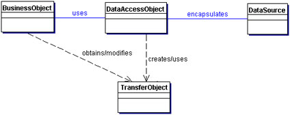
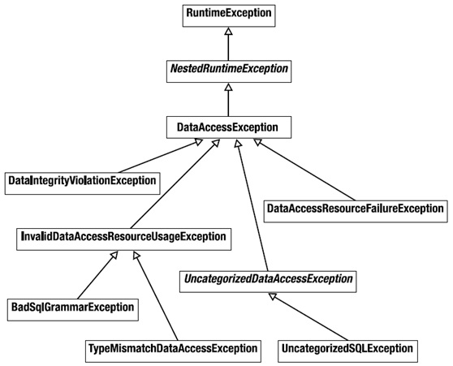

Conceptos esenciales de acceso a datos con Spring
En las recientes décadas, una filosofía se ha desarrollado como una tendencia de diseño en la comunidad de desarrollo orientado a objetos. El diseño orientado a al dominio con dos premisas:
- Para la mayoría de los proyectos de software, el enfoque principal debería ser el dominio y la lógica que yace en él.
- Diseños de dominio complejos deberían estar basados sobre un modelo.
DDD no es una tecnología o una metodología. Es una forma de pensar y establecer un conjunto de prioridades, apuntando a acelerar proyectos de software que tiene que trata con dominios complicados.
Cuando la complejidad se sale de las manos, el software ya no puede ser entendido lo suficientemente bien para ser fácilmente cambiado o extendido. En contraste, un buen diseño puede dar oportunidades de aplicar caracterísiticas complejas.
Algunos de los factores de diseño son tecnológicos, y un gran esfuerzo se pone en el diseño de reders, bases de datos o alguna otra dimensión tecnológica de software.
Todavía, la complejidad más significativa de muchas aplicaciones no es técnica. Es el dominio en sí mismo, la actividad o el negocio del usuario. Cuando esta complejidad de dominio no se trata en el diseño, no importa que la tecnología de infraestructura está bien concebida. Un diseño exitoso debe abordar sistemáticamente este aspecto central del software.
El uso de JDBC
La API de JDBC fue diseñada para mantener las cosas simples.
Esto significa que JDBC facilita las tareas de bases de datos. Siendo que la API de JDBC puede acceder cualquier tipo de datos tabulares, especialmente los datos almacenados en Bases de datos relacionales; ayuda a escribir aplicaciones Java que administran tres actividades de programación:
- Conectarse a una fuente de datos, como una base de datos.
- Enviar busquedas y sentencias de actualización a la base de datos.
- Entregar y procesar los resultados obtenidos desde la base de datos en una respuesta a la búsqueda
El siguiente fragmento de cófigo representa una idea lo que el uso de JDBC implicaría:
UsingJDBCForSimpleQuery.java
Algunos aspectos importantes a considerar dentro del uso de JDBC y basados en el código anterior son:
- La API de JDBC - Provee de acceso programático a datos relacionales desde el lenguaje Java. Con la APi se pueden ejecutar sentencias SQL, entregar resultados, y propagar cambios al DataSource suscrito.
- El JDBC Driver Manager - La clase
DriverManager define objetos los cuales pueden conectar aplicaciones Java a un driver JDBC. El DriverManager tiene tradicionalmente la columna vertebral de la arquitectura de JDBC.Es pequeño y simple. La extensión de paquetes estándar javax.naming y javax.sql permite usar un DataSource registrado en un servicio de nombrados JNDI para establecer una conexión con el DataSource.
En las aplicaciones empresariales la implementación de la lógica de negocio y el reflejo de los procesos en un software es mucho más importante que un problema de acceso a datos.
Conociendo Spring JDBC
EL valor agregado proveído por la abstracción de Spring JDBC es quizá descrita de una mejor manera en la siguiente lista, en donde se muestra que acciones son responsabilidad de Spring y cuales son del desarrollador:
- DevOps Definir parámetros de conexión
- Spring Abrir la conexión
- DevOps Indicar la sentencia SQL
- DevOps Declarar los parámetros y proveer de los valores
- Spring Preparar y ejecutar la sentencia
- Spring Establecer el loop de iteración de resultados
- DevOps Manejar cada iteración
- Spring Procesar cualquier excepción
- Spring Manejar transacciones
- Spring Cerrar la conexión, la sentencia y el resultset
Uno de los objetivos de Spring es permitir el desarrollo de aplicaciones orientada a objetos a través del desarrollo de interfaces, y Spring JDBC también aprovecha este hecho.
Muchos desarrolladores, se refieren a los objetos de persistencia de una aplicación como repositories.
Los objetos de servicio NO manejan su propio acceso a datos. En lugar de ello, delegan el acceso a los DAO's. La interfaz DAO mantiene el bajo acoplamiento al objeto de servicio.
Patrón de diseño DAO
Usa un Objeto de Acceso a Datos(DAO) para abstraer y encapsular todo el acceso al DataSource. El DAO administra la conexión con el DataSource para obtener y acceder datos.
El DAO implementa el mecanismo de acceso requerido para trabajar con el DataSource, el cual podría ser una base de datos relacional. El DAO esconde completamente la implementación del DataSource de los componentes que lo llaman, debido a que la interfaz no lo puede modificar por sí misma.DAO

Si planteamos nuestros objetos de acceso a datos de esta forma, entonces los objetos de servicio podrán acceder a las interfaces de las declaraciones de los DAO’s para manipular la estructura de la base de datos y los podremos desacoplar en dado caso de que necesitemos algún mock o cambio de implementación. Además, lo hace más sencillo de probar pues podemos definir pruebas de unidad reales en base a las llamadas que se deberían ejecutar en los colaboradores.
El patrón de diseño DAO debe ser bien conocido por cualquier desarrollador Java Empresarial, sin embargo, debemos clarificar algunas cosas para la implmenetación:
- Todos los accesos de la base de datos en el sistema son hechos a través de los DAO’s para mantener la encapsulación.
- Cada instancia del DAO es responsable por un objeto de dominio primario o entidad.
- Si un objeto de dominio tiene un ciclo de vida independiente, debería tener su propio DAO.
- El DAO es responsable de la creación, lectura(por llave primaria), actualizaciones y el borrado de un objeto de dominio.(CRUD)
- El DAO quizá permita búsquedas basados en criterios distintos a la llave primaria. Podemos referirnos a esos métodos como finder methods o finders. El valor que se regresa de un finder es normalmente una colección de objetos de dominio de los cuales el DAO es responsable.
- El DAO no es responsable por el manejo de transacciones, sesiones o conexiones, esto últimos son manejados fuera del DAO para mantener la flexibilidad.
- Evitamos en la medida de lo posible el uso de casts explícito.
- Aún aquí, es válido usar principios de POO como herencia y polimorfismo.
UserDao.java
ProjectDao.java
GenericDao.java
GenericDao.java
Manejo de excepciones
Si has escrito código con la API de JDBC sin Spring, entonces debés de conocer que no puedes hacer nada sin cachar siempre SQLException. El significado de la excepción es que algo malo paso cuando se intentó acceder a la base de datos, pero el detalle de la excepción en la mayoría de los casos no dice mucho que pueda ayudar.
Algunos problemas comúnes que causan que se arroje SQLException son:
- La aplicación no es capaz de conectarse a la base de datos.
- El query que se esta ejecutando tiene errores en su sintacis.
- Las tablas y las columnas referidas en la búsqueda no existen.
- Un intento fue hecho al insertar o actualizar valores que violan las restricciones de la base de datos.
¿Cómo debe ser tratada SQLException cuando se atrape? Realmente, si falla la base de datos no podemos hacer nada...
Y si no podemos hacer nada entonces ¿por qué debemos tratarla? Incluso si desearamos tratarla tenemos que profundizar en ella para obtener la verdadera causa del error. Algunos frameworks de persistencia ofrecen una jerarquía de excepciones, cada una de ellas apuntando a un problema diferente, esto hace crear bloques try/catch para excepciones que se pueden esperar de antemano. El problema con ello es que cada jerarquía de excepciones es referente exclusiva al framework.
Spring provee una jerarquía de excepciones también conocida como una plataforma agnóstica de excepciones para la persistencia con Spring que resuelve los problemas de falta de claridad en los errores y las jerarquías de otros frameworks, incluso la de JDBC.

Información de utilidad
Te recomendamos que explores la documentación de DataAccessException, pues hay actualizaciones al respecto de la jerarquía de excepciones y es muy bueno tenerlo como referencia.
La base de datos y el namespace
El paquete org.springframework.jdbc.datasource.embedded provee del soporte embebido de bases de datos con motores Java. Soporta HSQL, H2 y Derby de forma nativa. Aunque se puede extender el API para conectar nuevos tipos de bases de datos e implementaciones de DataSource.
Información de utilidad
Una bases de datos embebida es útil durante la fase de desarrollo de un proyecto por que es de naturaleza ligera. Los beneficios incluyen una fácil configuración, tiempo de inicio rápido, capaz de probarse, y la habilidad de evolucionar el SQL(estructira) durante el desarrollo.
Para embeber la base de datos necesitamos crear algunos scripts que nos permitan definir la estructura(DDL) y después asignarlos a nuestro bean de Spring.
DataSourceWithNamespace.xml
DeclaringDataSourceTests.java
Aunque potencialmente, se podría utilizar cualquier manejador de base de datos que provea de un Driver de Conexión el cual permitá manipularla.
Control de las conexiones(El *DataSource)
Independientemente de cual forma de soporte en Spring uses, necesitarás configurar una referencia a un DataSource. Spring ofrece varias opciones para configurar beans DataSource en una aplicación:
- DataSources que son definidos por el driver
- DataSources que son buscados por un recurso JNDI
- DataSources que son pool de conexiones
Adicionalmente, Spring ofrece dos tipos de clases para DataSource del paquete org.springframework.jdbc.datasource:
Uso de Commons DBCP y/o C3P0
DriverManagerDataSource
DriverManagerDataSource
Con Spring podemos configurar una referencia a un DataSource que esta dentro de un JNDI y alambrarlo a cualquier otra clase que lo necesite. Con el namespace jee tenemos disponible el tag <jee:jndi-lookup> que ayuda a buscarlo e inicializarlo.
<jee:jndi-lookup id="dataSource" jndi-name="/jdbc/MakingDevsDS" resource-ref="true" />
Nota: El uso de resource-ref="true" antepone al nombre JNDI java:comp/env/.
Modelado de las operaciones como objetos Java(Caso de estudio)
Nuestro ejemplo estará basado en un tablero de tareas(Taskboard), el cual esta asignado a algun proyecto que a su vez tiene varias historias de usuario, dichas historias serán pobladas por las tareas. Todo este conjunto nos dará como resultado un tablero que potencialmente podrá ser visualizado en un front-end.
Creación de proyectos
Como product owner
Deseo administrar proyectos
De tal manera que pueda crearlos y visualizarlos
Criterios de aceptación:
- El proyecto debe tener un identificador único
- El identificador de proyecto de estar en mayúsculas y sin espacios
- Debe de tener una descripción
- Esta formado de varias historias de usuario
- Se deberá calcular el esfuerzo total del proyecto
Agregar historias de usuario
Como product owner
Deseo agregar la descripción de una funcionalidad
De tal manera que pueda identificarla como una historia de usuario
Criterios de aceptación:
- Debe de tener el esfuerzo necesario en puntos
- Debe tener una prioridad
- Dos historias de usuario no pueden tener la misma prioridad
- Debe tener una descripción
- Es posible asignarle varias tareas
- Cuando todas sus tareas están terminadas entonces se considera hecho
- Se puede repriorizar una historia de usuario.
Crear tareas
Como miembro del equipo
Deseo agregar tareas
De tal manera que puedan ser parte de una historia de usuario
Criterios de aceptación:
- Las tareas pueden tener tres estados: TODO, WIP y DONE
- Una tarea puede estar asignada a varios usuarios
- Tienen una descripción
- Pueden cambiar de estado
- Un usuario sólo puede tener una tarea en WIP
- Cuando se crea una tarea debe de tener el estado TODO.
- Sólo se pueden asignar tareas a usuarios dentro del proyecto.
Agregar miembros al equipo
Como miembro del equipo
Deseo unirme al equipo
De tal manera que agregar tareas y colaborar en un proyecto
Criterios de aceptación:
- Los nombres de usuario deben ser únicos
- El nombre de usuario debe tener la forma de un correo
Visualizar un tablero de tareas
Como miembro del equipo
Deseo un tablero con las tareas de una proyecto
De tal manera que pueda visualizar el estado actual del proyecto
Criterios de aceptación:
- Debe de tener 3 líneas
- Las tareas deben mostrar el nombre de los participantes
Tu propia historia...
Como un usuario
Deseo hacer algo
De tal manera que me aporte valor
Criterios de aceptación:
- Satisfacción
- Validación
- Restricción
Estructura de las clases de dominio
Project.java
UserStory.java
Task.java
TaskStatus.java
User.java
Funcionalidad que deseamos implementar a nivel de interfaces
ProjectService.java
UserStoryService.java
TaskService.java
UserService.java
Información de utilidad
Aunque esta es la funcionalidad de negocio que deseamos implementar, debes recordar que aún necesitarás otros componentes que te permitan almacenar los datos de la estructura; tales componentes podrían implementarse con acceso a datos(relacionales o no relacionales) y sus respectivas abstracciones.